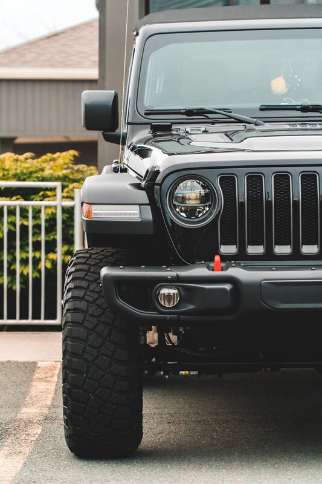
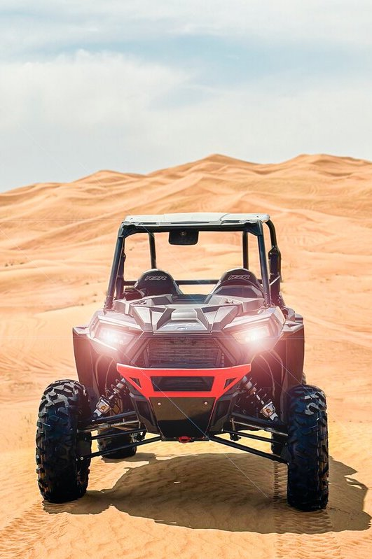
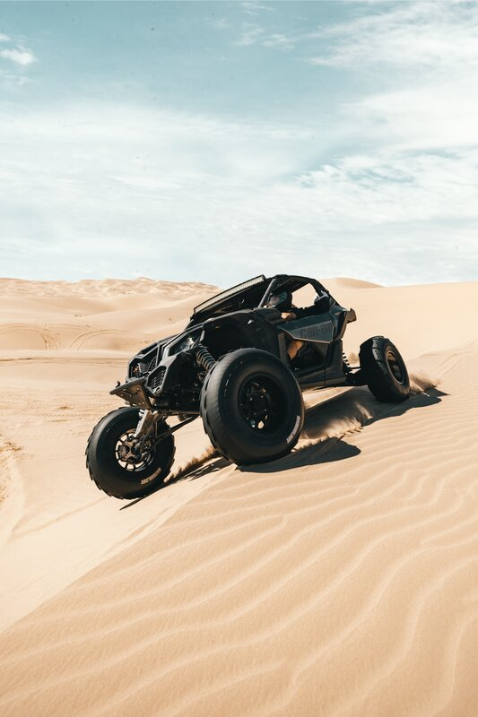

Jeep Rubicon
- Engine: 3.6-liter V6 engine producing 285 horsepower and 260 lb-ft of torque
- Transmission: 6-speed manual or 8-speed automatic transmission
- Four-wheel drive system: Command-Trac 4x4 system with part-time 2-speed transfer case
- Axles: Heavy-duty front and rear axles with Tru-Lok electronic locking differentials
- Suspension: Front and rear solid axles with heavy-duty coil springs, electronic sway bar disconnect, and high-performance shocks
- Tires: LT285/70R17C all-terrain tires
- Wheels: 17-inch aluminum wheels with polished faces and black pockets
- Brakes: 4-wheel disc brakes with anti-lock brake system (ABS)
- Steering: Electric power steering
- Seats: 5 people
- Climate Control: Air conditioning and heat
Polaris RZR
- Engine: 925cc ProStar Turbo H.O. 4-stroke twin-cylinder engine
- Transmission: Automatic PVT (Polaris Variable Transmission) with high and low range gears and reverse
- Drive system: On-Demand True AWD/2WD with automatic locking front differential
- Suspension: Dual A-arm front suspension with Walker Evans needle shocks and stabilizer bar, and trailing arm rear suspension with Walker Evans needle shocks and stabilizer bar
- Ground clearance: 14 inches
- Wheelbase: 96 inches
- Tires: 32-inch Maxxis Carnivore 8-ply radial tires on 15-inch aluminum wheels
- Brakes: 4-wheel hydraulic disc brakes with dual-bore front and rear calipers
- Steering: Electronic power steering
- Fuel capacity: 12 gallons
- Seats: 4 people
Can-am Maverik X3
- Engine: 900cc, 3-cylinder Rotax ACE turbocharged engine
- Transmission: QRS-X CVT (Continuously Variable Transmission) with high, low, park, neutral, and reverse
- Drive system: Selectable 2WD/4WD with Visco-Lok X auto-locking front differential
- Suspension: Front double A-arm suspension with 20 inches of travel and rear trailing arm suspension with 22 inches of travel
- Ground clearance: 15 inches
- Wheelbase: 102 inches
- Tires: 30-inch Maxxis Bighorn 2.0 tires on 14-inch aluminum wheels
- Brakes: 4-wheel hydraulic disc brakes with dual piston front calipers and single piston rear calipers
- Steering: Dynamic power steering (DPS)
- Seats: 4 people